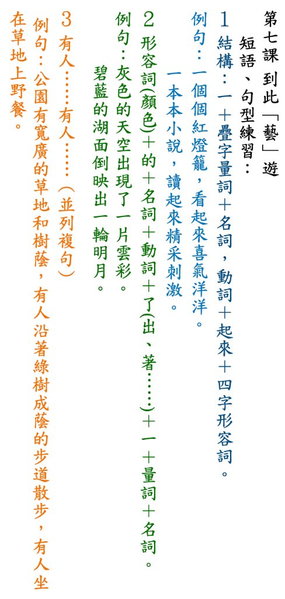

四上國語
第七課～第十二課 短語與句型教學互動網
🏠 返回選課首頁
🖼 檢視板書講義原圖
A-
標準字級
A+
⛶ 全螢幕投影
國語四上（第七冊）短語與句型互動教學網
自然段對照定位・彩色詞性結構拆解・每句 3 大生活情境造句練習・5 題隨堂小測驗
第七課《到此「藝」遊》
📍 1. 課文自然段定位
🧩 2. 短語與句型拆解
✍️ 3. 情境造句練習 (3×3)
🎯 4. 五題隨堂小測驗
📖 第七課《到此「藝」遊》陳琡 —— 全文 7 個自然段對照（點擊彩色底線句可直接拆解結構）
🎯 第七課 短語與句型五題隨堂小測驗
結構與應用測驗
💡 答案與解析
⬅ 上一題
下一題 ➡
💡 直接公佈答案與解析
🔄 重置本題
🧹 全部重作
📌 第七課 到此「藝」遊 短語、句型練習講義
✕ 關閉
